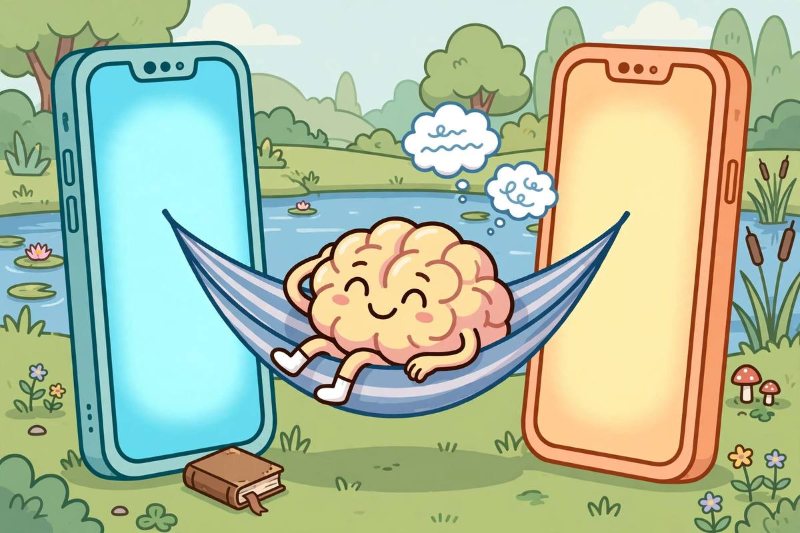

Brain Rot: The Feed Named Its Own Side Effect

Start with the definition, because the definition contains the whole joke in one polite word. Oxford defines brain rot as “the supposed deterioration of a person’s mental or intellectual state, especially viewed as the result of overconsumption of material, now particularly online content, considered to be trivial or unchallenging.” Supposed. The dictionary, in the act of crowning the phrase, declined to certify the condition. It recorded a way people talk. It did not issue a diagnosis, fit anyone for a helmet, or declare a generation’s mind officially compost.
That single qualifier is the most roasted, least read word of 2024. Coverage of the crowning tended to sprint past it toward the doom, which is understandable. Doom has better lighting. But a roast owes the phrase a fair trial, and the trial begins with the evidence the dictionary itself filed.
The facts box: a phrase older than the feed
Brain rot was named Oxford Word of the Year for 2024 after a public vote in which more than 37,000 people took part, choosing from a shortlist of six words. Its usage frequency rose by 230 percent between 2023 and 2024. Oxford has run this crowning annually since 2004, and the previous year’s winner was rizz, shorthand for charisma, which means the English language’s official mood swung in twelve months from charm to decay. As a two year diary of being online, that is uncomfortably accurate.
The phrase itself is not a TikTok invention wearing a trench coat. Its first recorded use sits in 1854, in Henry David Thoreau’s Walden, where Thoreau scolded a society he thought was devaluing complex ideas in favour of simple ones and asked why nobody tried to cure the brain rot that prevailed, in his words, so much more widely and fatally than the potato rot England was busy curing. A man in a cabin by a pond, complaining that the culture was getting shallower. The feed did not invent that posture. It inherited it, gave it a front camera, and taught it to post hourly.
In June 2025 the term was added to the Oxford English Dictionary, completing the promotion. Slang that starts as a comment section insult now has a permanent desk in the reference section.
The genre shelf: what counts as brain rot content
Oxford does not leave the genre vague. The announcement names the canon directly. It is strongly associated with creator Alexey Gerasimov’s viral Skibidi Toilet video series, featuring humanoid toilets, and with user generated “only in Ohio” memes, which reference bizarre incidents in that state. It also documents the spin off vocabulary, a brain rot language in which skibidi means something nonsensical and Ohio means something embarrassing or weird, words that began in viral online culture and then spread offline into ordinary speech.
Lay the canon out on a shelf and its shape becomes clear.
| Exhibit | What it is, per Oxford | What it asks of the viewer |
|---|---|---|
| Skibidi Toilet | A viral video series featuring humanoid toilets | Nothing, gloriously, for seconds at a time |
| Only in Ohio memes | User generated memes about bizarre incidents in Ohio | To accept that Ohio is now a genre, not just a state |
| Skibidi, as a word | Brain rot language for something nonsensical | To mean nothing, precisely, on purpose |
| Ohio, as a word | Brain rot language for something embarrassing or weird | To file any strange event under one American state |
| The self label | A humorous, self deprecating tag used by the communities posting the content | To laugh at your own feed before anyone else does |
The table is satire, but notice what it reveals. This is not a genre that sneaks up on its audience disguised as education. It announces itself as nonsense, in nonsense words, and the audience repeats the announcement as the joke. Whatever brain rot is doing, it is not false advertising.
1854 versus 2024: the complaint, remixed
Thoreau’s complaint and the modern one share a skeleton. Both say the culture prefers the simple to the complex. Both say attention is being spent badly. Both are delivered with total confidence by someone participating in the very media economy being scolded, since Walden was, after all, a book Thoreau hoped people would read, and the brain rot lament is usually a post someone hopes will travel.
The difference is the direction of the finger. Thoreau pointed outward, at society. The 2024 version points, mostly, at the mirror. Oxford stresses that the term is often used in a humorous or self deprecating manner by the online communities themselves, and its president, Casper Grathwohl, called out the cheeky self awareness of it all: the generations largely responsible for creating this content adopted the insult for it, and amplified it through the very channels said to cause it. The accused wrote the charge sheet, turned it into a catchphrase, and voted it word of the year. That is not a decline narrative. That is a comedy troupe reviewing its own show.
Northeastern linguistics professor Adam Cooper read the selection the same way, calling it tongue in cheek and a playful conversation starter that holds up a mirror to society. When the linguists and the teenagers agree that a phrase is a joke about ourselves, the roast should probably take the hint.
The serious footnote, kept its proper size
Fairness requires the footnote, sized correctly. Oxford itself notes that a broader, more serious conversation is gaining momentum about the potential negative impact of excessively consuming this content, particularly for children and young people, and that a mental health centre in the US published advice on recognising and avoiding brain rot. That conversation is real and it belongs to parents, educators and clinicians.
What it does not do is retroactively convert a slang term into a finding. The dictionary said supposed. Later explainers that dropped the qualifier were not summarising Oxford. They were upgrading it, the way a group chat upgrades a sprained afternoon into a medical saga. The roast target here is that upgrade, the doom framing that borrows a dictionary crown to dress up a worry as a verdict. Worry all you like, on the evidence. Just do not forge the dictionary’s signature on it.
The two feed test: a decision framework
For the ordinary scroller wondering which side of the line a feed sits on, two questions do most of the work.
- The label question. Is the phrase being used as a joke about a silly half hour, in the self deprecating way Oxford documents? Then it is slang doing slang’s job, and the correct response is the laugh the poster intended.
- The displacement question. Is the content crowding out things the viewer actually wants, sleep, work, people in the same room, on a pattern that survives the joke? That is no longer a vocabulary question. It is a habits question, and it deserves a habits conversation, not a scarier nickname.
- The source question. When a claim about brain rot arrives wearing a lab coat, ask whether it quotes Oxford’s supposed or quietly deletes it. A source that deletes the qualifier is selling certainty the dictionary never stocked.
- The exit question. Can the viewer close the app mid nonsense and feel mildly amused rather than genuinely stuck? The genre is built to be left. A feed that cannot be left is a design problem, and naming it rot lets the design off the hook.
Why no fix procedure here? A slang term is not a device and a feed is not an appliance with a reset button this article can locate for you. The framework above is the tool: it keeps the joke a joke and routes the real concern to the conversation that can actually help.
What the crown actually means
A word of the year is a mirror with a ceremony attached. In 2024 the mirror showed a culture fluent enough in its own nonsense to name it, vote for the name in the tens of thousands, and laugh while doing it. Brain rot the phrase is a small masterpiece of self knowledge. Brain rot the headline, stripped of its supposed, is a costume.
Thoreau asked from his pond why nobody would cure the brain rot. One hundred and seventy years later, the patients held a vote, crowned the diagnosis themselves, and went back to posting. The pond is a feed now. The complaint is a caption. And the most honest word in the whole story remains the one the dictionary insisted on and everyone else skipped: supposed.
— Rex Bennett, Entertainment Writer